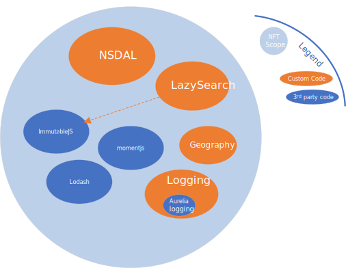
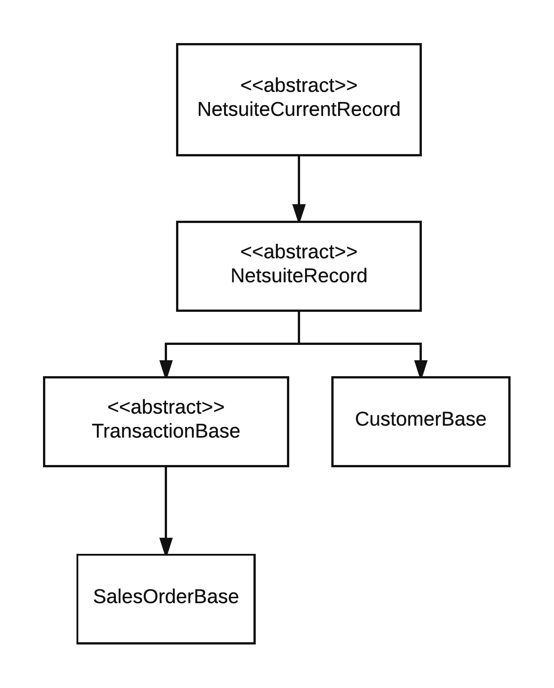

for SuiteScript 2.x
This is a small but powerful framework for writing SuitScript that scales. A primary goal is to enable authoring scripts that easy to write and easy to maintain.
Includes
also included (only as a convenience, NFT does not depend on these):
immutablejs - used for arbitrary length sequences and elegant search result processing)lodash - NFT enables direct use of this amazing library on NS records and search result collections)momentjs - popular date manipulation librarybignumber.js - better decimal mathsee package-lock.json for exactly which versions of the above libraries are included.
See API docs here

Install this package as a dependency and the SuiteScript 2.x (SS2) typings from @hitc
npm install netsuite-fasttrack-toolkit-ss2
npm install @hitc/netsuite-types --save-dev
Use the NetSuite file cabinet advanced add button to upload the node_modules/netsuite-fasttrack-toolkit-ss2/dist/NFT-SS2-#.#.#.zip
file to the same folder in which you place your SuiteScripts. It will extract to a subfolder named NFT-SS2-#.#.#.
If you typically just put your SuiteScripts under the /SuiteScripts/ folder in the NS file cabinet then simply
extract the zip there.
A recommended practice is to put your SuiteScript 2.0 files under a subfolder, such as SuiteScripts/SS2/. This
creates a convenient 'root' folder for your SS2 projects.
After install you should get a folder link at your project root named NFT-SS2-#.#.#
This creates a folder structure mirroring what you have in NetSuite so you can use relative paths when you
import from the library (e.g. import {CustomerBase} from "./NFT-SS2-1.2.3/DataAcess/CustomerBase)
NSDAL is a variation of the Active Record pattern for working with NetSuite records. It removes boilerplate code and simplifies access to NetSuite body fields, sublists, and even subrecords; all reduced to simple objects and properties familiar to all javascript developers.
Behind the scenes, NSDAL is a thin wrapper eliminating boilerplate code (e.g. getValue({fieldId:'foo'}.
It still calls all the normal NetSuite APIs.
NSDAL defines NetSuite record types in a class hierarchy. You can use the xxxBase classes directly if you don’t need custom fields. Otherwise you derive your own class and add custom fields as shown in the code example that follows.
Subrecord support! Take a look at the CustomerBase.addressbook sublist.
CustomerBase.addressbook[0].addressbookaddress gets the strongly typed AddressBase SubRecord. It works mostly like any
other record you just don't explicitly save() it.
Works with SuiteScript 2.0 and 2.1.
/**
* Test file for SuiteScript 2.0
* (replace 'NFT/' below with the relative path to your NFT-SS2-x.y.z folder)
* @NApiVersion 2.x
* @NScriptType Suitelet
*/
import * as LogManager from 'NFT/EC_Logger'
import {CustomerBase} from 'NFT/DataAccess/CustomerBase"
import {FieldType} from "NFT/DataAccess/Record"
import {SublistFieldType,Sublist,SublistLine} from "NFT/DataAccess/Sublist"
import * as _ from "NFT/lodash"
// each script should request the DefaultLogger
var log = LogManager.DefaultLogger
/**
* Define fields for the 'contactroles' sublist on customer
*/
class ContactRolesSublist extends SublistLine {
// the country internal id
@SublistFieldType.select
role: number
// adding `Text` suffix to field name surfaces the text value
// instead of internalid
@SublistFieldType.select
roleText: string
}
/**
* define a customer class for our NetSuite account including custom fields. Standard fields come from customer.Base
* so we don't have to repeat them here. This Customer class could be in a separate file/folder (e.g RecordTypes/Customer.ts) and
* reused across all scripts via `import {Customer} from "./RecordTypes/Customer"`
*/
class Customer extends CustomerBase {
@FieldType.multiselect
custentity_multiselect:number[]
@FieldType.datetime
custentity_shawn_date : Date
// add 'Text' suffix to any property to `getText()` instead of `getValue()`
@FieldType.datetime
custentity_shawn_dateText: string
@FieldType.sublist(ContactRolesSublist)
contactroles: Sublist<ContactRolesSublist>
}
export = {
onRequest: (req, resp) => {
// load customer internal id 1542
var c = new Customer(1542)
// strongly typed field access
c.companyname = 'a new company name'
c.custentity_multiselect = [1, 2]
c.custentity_a_date = new Date()
// access `role` field VALUE of first contact role
c.contactroles[0].role
// access `country` field TEXT of first contact role
c.contactroles[0].roleText
// persist changes
c.save();
// just log a couple properties from our customer object
log.debug('customer', _.pick(c,['custentity_a_date', 'companyname']))
// address book - including experimental subrecord access
// get addressbook subrecord of first address on the customer
const addrSubRecord = c.addressbook[0].addressbookaddress
// addrSubRecord has fields like addr1, addr2, city, country, state, addrphone etc.
log.debug('address subrecord', addrSubRecord)
}
}
see also example.ts
NetSuite record definitions are contained in a class hierarchy to simplify defining them. You generally only work with
the bundled base classes, or derive your own e.g. use CustomerBase directly or define class Customer extends CustomerBase
as shown in the example above.

Use @FieldType.subrecord and @SublistFieldType.subrecord to designate fields that
point to NetSuite subrecords. Use them similarly to the sublist field type.
Initially we have Address and InventoryDetail subrecords defined.
This lets you work with subrecords as plain javascript objects just like the rest of NSDAL. e.g.
const build = new AssemblyBuild(123)
// reading the quantity field of the InventoryDetail body field on Assembly Build record
build.inventorydetail.quantity
nsSearchResult2obj turns a netsuite search.Result into a POJO, especially useful when chaining operations or returning
search results from an API.
import {nsSearchResult2obj} from "NFT/search"
import * as search from "N/search"
const s = search.load({ id: 'somesearchid' } ).run().getRange({start:0, end:1000})
const objects = _.map(s,nsSearchResult2obj()).toArray()
// objects will be array of plain javascript objects with property names matching the field names in netsuite.
// fields with a non-falsey 'Text' value surface as properties suffixed with "Text"
// e.g. `result.fieldname` or `result.fieldnameText`
// see inline help for more (e.g. support for column labels
While nsSearchResult2obj() is useful on its own, we usually use it with LazySearch. This adds powerful and lazy processing of
search results. Here 'lazy' means records are paged in from the search, as needed, never consuming more than 1 page
in memory at a time. Contrast this with underscore or lodash which create complete copies of the target collection
for each chained operation by default.
For example _.map(searchResults, ...) creates a new collection in memory holding the output of the map,
doubling overall memory use (searchResults remains unchanged, and map() emits a new collection of the same
length as searchResults)
LazySearch processes one result at a time, passing it through all chained operation methods. It never creates intermediate
collections or exceeds 1 page of results stored in memory. This bounded memory usage holds true whether there are 1 or
1 million search results. The limitation is LazySearch is intended for forward-only iteration of search results - which we
find is overwhelmingly the most common use case.
import {nsSearchResult2obj, LazySearch} from "./search"
import {Seq} from "immutable"
// get the first result as a POJO
let firstResultAsObj = Seq(LazySearch.load("123")).map(nsSearchResult2obj()).first()
Also see search in the API documentation,
especially the LazySearch class.
The governance handler utilties can be used with any script, but most often are used with a saved search in a scheduled script.
There are two functions, one for checking governance usage (governanceRemains()) and another which additionally
auto-reschedules the currently executing script (rescheduleIfNeeded())
governanceRemains supports parameters for setting thresholds on both time and units usage. See the tsdocs for more on this function.
rescheduleIfNeeded executes the passed predicate, and if it returns false it automatically
reschedules the script (using N/task) passing along script parameters if provided.
Example: exit processing automatically when governance falls below time or units threshold.
import {nsSearchResult2obj, LazySearch} from "./search"
import {governanceRemains, rescheduleIfNeeded} from "./governance"
import {Seq} from "immutable"
// process results from search id '123' until out of governance. Governance checks are run for each iteration of the
// `forEach()` and gracefully exit.
Seq(LazySearch.load("123")).takeWhile(governanceRemains()).map(nsSearchResult2obj()).forEach( result => {
// .. do something with search result.
})
// same as above, but with automatic graceful exit AND rescheduling
Seq(LazySearch.load("123"))
.takeWhile( rescheduleIfNeeded(governanceRemains()))
.map(nsSearchResult2obj())
.forEach( result => {
// .. do something with search result.
})
Also see governance API docs
NFT provides an advanced logging mechanism based on Aurelia's logger.
It means you can have multiple loggers and control the logging verbosity of each. In other words, it's a lightweight but much richer logging facility than the NetSuite provided logger.
Automatically log entry and exit of methods with rich options by adding a line like this to the end of your script:
LogManager.autoLogMethodEntryExit({target:EC,method:/\w/}, { withProfiling:true })
The above line will automatically log all methods defined on the EC object/namespace
Other configuration options include automatic logging of execution time, governance usage, and other goodies.
See the jsdoc help for autologMethodEntryExit()
Please do.
This is written with TS and is recommended. However, it can be used by javascript clients as well.
Configure tsconfig to include paths for NetSuite modules and NFT modules:
"paths": {
"N/*": [
"node_modules/@hitc/netsuite-types/N/*"
]
}
The test/ folder is configured to use ts-jest to compile the sources.
to run the test suite:
npm test
The following are useful if you're contributing to the codebase and publishing to NPM Skip this section if you're just using NFT in your projects.
node_modules/.bin/tsc
node_modules/.bin/gulp
node_modules/.bin/gulp declarations
npm publish
node_modules/.bin/gulp docs
Generated using TypeDoc